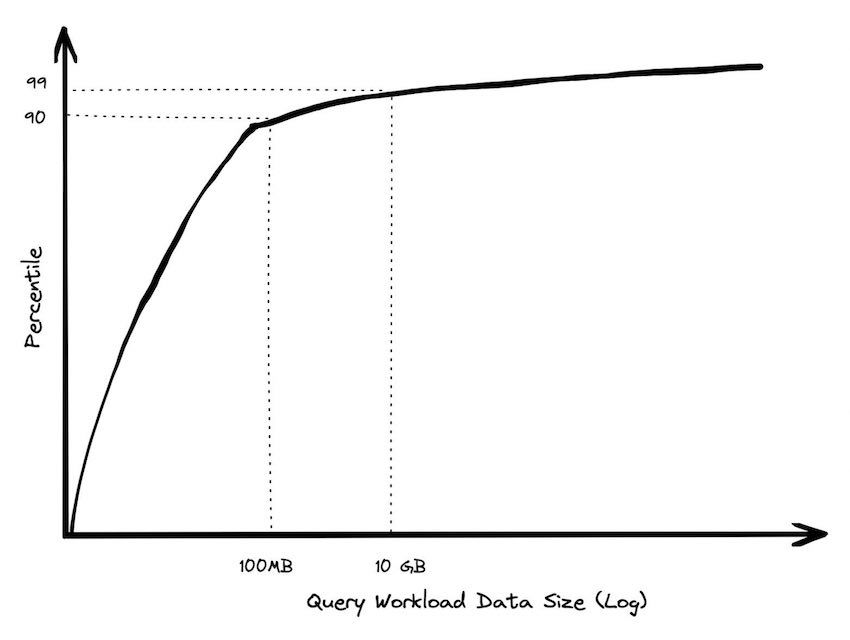
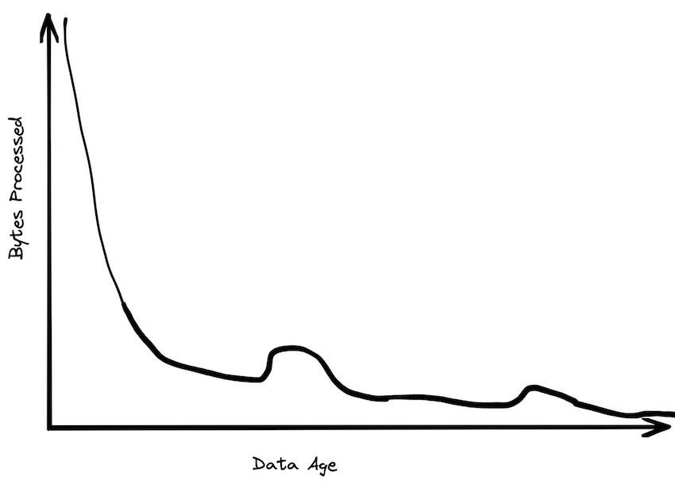

DuckDB is a relational database management system (RDBMS) that is used for managing data stored in relations, which are essentially tables. DuckDB is an in-process OLAP DBMS written in C++. It has no dependencies, is easy to set up, and is optimized to perform queries on data. It is similar to SQLite for Analytics. DuckDB is designed to run on a single machine, and it is not a multi-tenant database. It is perfect for data practitioners that want to perform local analytical workloads easily and quickly.
This blog is a continuous work and WIP.
DuckDB - Quacking Data
DuckDB is the OLAP-version of SQLite. It’s simple, feature rich, fast and most importantly free. It reall is an incredible tool for quick local analytical workloads. It has very impressive results in the H2O-benchmark resulting in a jack-of-all-trades for analytics.
It has neat integration into:
pandaspolars- Arrow, PostgreSQL,
parquet,deltalake, …
Where you simply query on top of the datastructure which makes the query incredibly efficient even if it’s not “DuckDB”-format. It all becomes painless and efficient through the Apache Arrow-protocol. Arrow is a cross-language development platform for in-memory analytics which is very fast, because the underlying structure remains we never copy data between DuckDB and polars as an example. Rather DuckDB operates on polars Arrow dataset. Cool? Yes! 🤓
Lately they’ve added superb Spatial Support where they leverage GDAL.
Recently Motherduck gave a talk on how Big Data is Dead, where a BigQuery founding engineer laid out the average customer doesn’t have Big Data. Jordan Tigani notes the following trends.


Further Jordan notes that from 2006 to 2023 we see a huge increase in how powerful single nodes are. In 2006 you could get 2GB RAM, today a standard instance has 256 GB RAM and if you slap your wallet at the problem you can get 24TB (!) RAM.
Through this power of a single node more than 99.9% of all problems should be possible to solve through a single node where DuckDB can reign supreme.
How am I using DuckDB in my professional life?
DuckDB is integral to my workflow. I use it when polars is not enough. Because DuckDB can easily query parquet we’re good to go in most Machine Learning setups.
Connecting directly to S3 is as simple as using the official httpfs extension which is done in the following way:
INSTALL httpfs; # run once
LOAD httpfs;How I want to move forward with DuckDB
I have so many plans on what I wish to achieve.
Poor Mans Data Lake
I have been thinking a lot lately on building my own Data Lake using DuckDB, polars & dagster. This would be greatly inspired by dagster’s blog - ‘Poor Mans Data Lake’.
Best Practices Write-Up
Additionally it’d be very interesting to set up a “Best Practices” using “Local First” tooling such as DuckDB & polars. When to use what and how they differentiate.